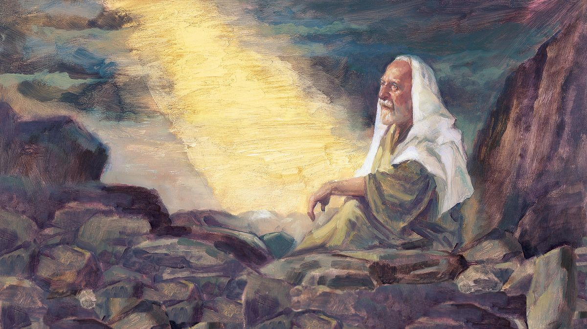
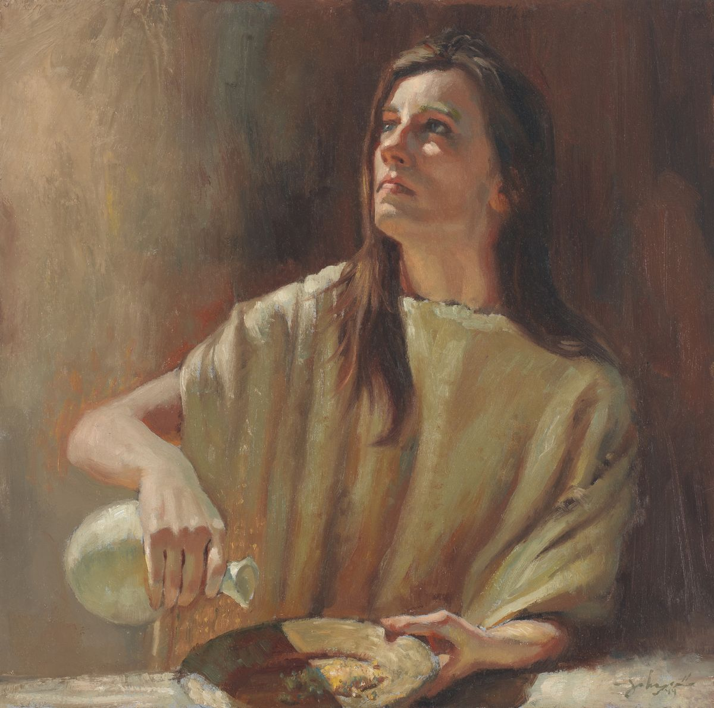
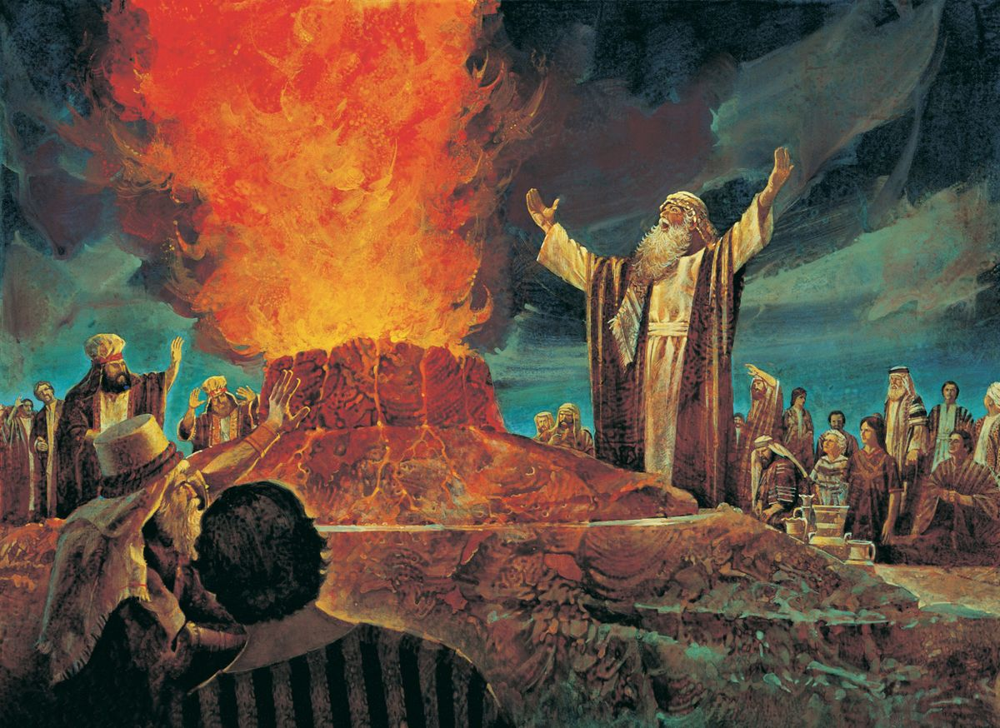
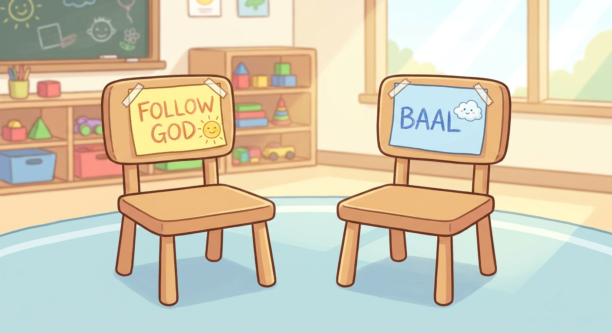

1 Kings 18:21 · "How long halt ye between two opinions? if the Lord be God, follow him."
1 Kings 12-13; 17-22 · Come Follow Me, June 29-July 5Primary (9-year-olds), Elk Ridge 15th Ward~35 min
Objective. Tell the story of the prophet Elijah so the kids feel one clear invitation: you cannot follow God halfway. The whole story asks Elijah's question, "How long halt ye between two opinions? If the Lord be God, follow him." The centerpiece is the two-chairs object lesson (thanks, Lauren), landing right at the turning point, and it ends on the truth that the same God who answers with fire from heaven usually answers with a "still small voice."
↩ Where we are on the timeline
Last time we saw three kings who fell, and the last of them, wise King Solomon, let his heart drift to other gods. After Solomon, the kingdom split in two. The northern kings went bad, the worst being King Ahab, who worshipped a fake god named Baal. Into that mess God sends one brave prophet: Elijah.
King 3Solomon
→
ThenKingdom splits
→
WickedKing Ahab
→
ProphetElijah
One prophet, Elijah, calls a whole kingdom back to the true God.
01
A kingdom that forgot God
~4 min
Opening question: Has anyone ever had a really hard time making up their mind? Which dessert, which team, which game? Today's story is about a whole country that could not make up its mind about the most important question there is: who is the real God?
The people had started worshipping a made-up god called Baal. So God sent the prophet Elijah to tell wicked King Ahab there would be no rain until God said so. Three years of drought. Everyone was hungry. That is where our story begins.

The prophet Elijah, sent by God to a kingdom that had forgotten Him. Gospel Art · the Church
02
Elijah and the widow
~8 min
God sent Elijah to a widow in a town called Zarephath. She was down to her very last handful of flour and drop of oil. She was gathering sticks to cook one final meal for herself and her son before they starved. And Elijah asked her to feed him first.

The widow of Zarephath had only a little flour and oil left, and Elijah asked her to share it first. Gospel Art · the Church
Stop and ask
What would you do? Would you give away your very last meal to a stranger?
"…make me thereof a little cake first… For thus saith the Lord… The barrel of meal shall not waste, neither shall the cruse of oil fail…"
🔎 Focus question
Why do you think God asked her to give first, before the miracle came? (Faith comes first, then the blessing. She had to trust before she could see it.)
She trusted, and she did it. And the flour barrel and oil jar never ran empty the whole rest of the drought. Later, when her son got sick and stopped breathing, God, through Elijah, brought the boy back to life.
God, through Elijah, healed the widow's son. Her faith was rewarded. Gospel Art · the Church
03
The showdown on Mount Carmel
~8 min
Now the biggest, most exciting part. Elijah challenged 450 prophets of Baal to a showdown in front of all Israel. Two altars, two sacrifices, no fire allowed. Whichever God answered by sending fire from heaven is the real God.
First Elijah asked everyone the big question. Keep this verse in mind, because we come right back to it.
"How long halt ye between two opinions? if the Lord be God, follow him: but if Baal, then follow him."
Activity · run the contest
Fire from heaven
Follow the three steps with the class. Watch what Baal does… and what the Lord does.
🔥
🪨
Step 1: the prophets of Baal go first.
The Lord, He is the God! The fire fell and burned up the sacrifice, the wood, the stones, and even licked up all the water. When the people saw it, they fell on their faces and shouted, "The Lord, he is the God." Baal never answered, because Baal was never real.

Elijah Contends against the Priests of Baal, by Jerry Harston. Fire falls from heaven on the soaked altar. Gospel Art · the Church
"Then the fire of the Lord fell… And when all the people saw it, they fell on their faces: and they said, The Lord, he is the God, the Lord, he is the God."
🔎 Focus question
Baal's prophets shouted all day and nothing happened. Elijah said one short prayer and fire fell. What does that teach us about who is really listening when we pray?
04
Object lesson: the two chairs
~7 min
This is the heart of the lesson. Elijah asked, "How long halt ye between two opinions?" To "halt between two opinions" means trying to have it both ways: never deciding, wobbling back and forth. Here is what that looks like.
Set up two real chairs a couple of feet apart. Label one "Follow God" and one "Baal" (sticky notes work). Then let a volunteer try it.

Two chairs, a couple of feet apart: one "Follow God," one "Baal."
Activity · try it yourself
Can you sit on both at once?
Tap a button to see what happens. (Do it for real with a volunteer too.)
Two chairs. Which will you choose?
The Israelites were trying to sit on both chairs: following God a little and Baal a little. Elijah told them you cannot do both. Pick one and sit all the way down. We do the same thing sometimes. Read each one and pick: is that person sitting on one chair, or wobbling between two?
1. You are kind and friendly at church on Sunday, but mean to your little brother at home on Monday.
Wobbling. Following God is not just for church. Sitting all the way down means being kind everywhere, even at home when it is harder.
2. You only say your prayers when you want something, and skip them when things are going fine.
Wobbling. A person who has sat all the way down talks to God every day, not just when they need a favor.
3. You tell the truth even when a lie would get you out of trouble.
Sitting all the way down. That is what it looks like to choose one chair, even when the other one seems easier.
Say it together
Trying to follow both is wobbly, uncomfortable, and you fall. Sitting all the way down on God is steady and safe. "If the Lord be God, follow him."
05
The still small voice
~5 min
After the huge victory, wicked Queen Jezebel wanted Elijah dead. He ran away, scared and tired and discouraged, all the way out into the wilderness. Then God came to talk to him on a mountain. But God did not come the way Elijah expected. Tap each one and see where the Lord was… and was not.
Activity · listen for the Lord
Where was the Lord?
Try the loud, powerful ones first.
"…a still small voice."That is how God usually speaks to us
"…but the Lord was not in the wind… but the Lord was not in the earthquake… but the Lord was not in the fire: and after the fire a still small voice."
🔎 Focus question
The same God who sent fire from the sky on Mount Carmel talked to Elijah with a quiet voice inside. Most of the time, God speaks to us the quiet way, through the Holy Ghost. What can we do to be quiet enough to hear Him?
06
Watch: fire on Mount Carmel
~3 min
A short animated telling of the contest with the prophets of Baal, straight from the Church's scripture stories for children.
Challenge for the week: pick one way to "sit all the way down" on God's chair. Say your prayers even when you are tired, be honest when it is hard, be kind to someone even when no one is watching.
Remember: you cannot follow God halfway and feel steady. Choose Him all the way.
Brief testimony: God is real, and He answers those who choose Him fully, sometimes in big ways like fire from heaven, but most often in quiet ways like a jar of flour that never runs out, or a small warm feeling inside. Close with prayer.